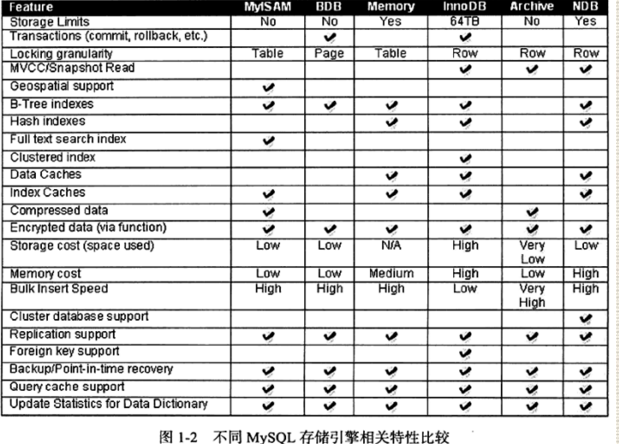

MySQL存储引擎类型
innodb
1、支持事务，面向在线事务处理（OLTP）方面的应用，支持行锁（锁粒度），支持外键；
2、通过多版本并发控制MVCC来获得高并发性，并且实现了sql标准的4种隔离级别（默认为repeatable read 可重复读）；
3、提供插入缓冲（insert buffer），二次写（double write），自适应哈斯索引（ahi），预读（read ahead）；
4,、对表中数据的存储，innodb采用clustered。每张表的存储按逐渐的顺序存放，如果没有显示的为飚定义主键，innodb会为每一张行生成一个6字节的rowid，作为主键
.ibd innodb数据文件，索引也存在里面，既缓存数据，也缓存索引
.frm 表结构文件
myisam
1、不支持事务，表锁（锁粒度）、全文索引，对OLAP在线分析处理，操作速度快；
2、myisam存储引擎表由MYD和MYI组成，MYD存放数据文件，MYI存放索引文件；
3、从mysql5.0开始，mysql默认支持256T单表数据
4、对于myisam存储引擎表，mysql数据库只缓存其索引文件，数据文件的缓存交由硝唑系统本身来完成，区别在于使用LRU算法缓存数据的大部分数据库；
select count(*) 查询 myisam快 innodb慢
myisam有个计数器，直接读取计数器的数据
innodb需要全表扫描
memory
1、数据放在内存中，数据库重启或掉电，表中的数据将丢失
2、只支持表锁，速度非常快，哈希索引，并发性能差
3、不支持text和blob列类型，一般用于创建临时表
archive
1、只支持insert和select操作
2、使用zlib算法将数据行（row）进行压缩后存储，压缩比可达1:10
3、适合存储归档数据，如日志信息
其他
还有其他存储引擎，比如：
Merge、CSV、Sphinx、infobright、Federated、NDB
